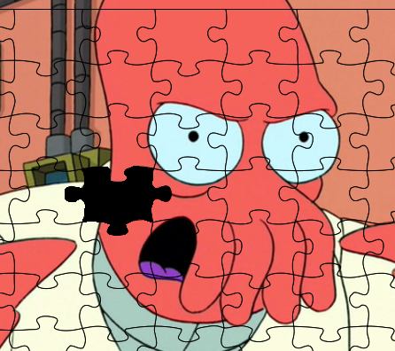
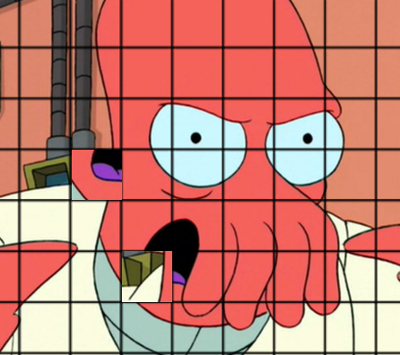

Lecture 3
types :: type1 → type2
F12, then click ConsoleF12, then click ConsoleCtrl+Shift+k↓, PgDn, n, j |
next slide |
↑, PgUp, p, k |
prev slide |
Esc |
enables ctrl+f globally |
Run it from the terminal
|
Or run ghci, then load the file
|
Implement factorial
| A | B | C | D | E | F | G | H | I | J | ... |
-- Most popular solution
facA n = if n > 1
then n * facA(n-1)
else n
-- Right tools for the right job
facB n = product [1..n]
-- Oh, you.
facC n = foldr (*) 1 [1..n]
-- Sophomore Haskell programmer
-- (studied Scheme as a freshman)
-- http://willamette.edu/~fruehr/haskell/evolution.html
facD = (\(n) ->
(if ((==) n 0)
then 1
else ((*) n (facD ((-) n 1)))))
-- Memoizing Haskell programmer
-- http://willamette.edu/~fruehr/haskell/evolution.html
facs = scanl (*) 1 [1..]
facE n = facs !! n
-- Iterative Haskell programmer
-- (former Pascal programmer)
-- http://willamette.edu/~fruehr/haskell/evolution.html
facF n = result (for init next done)
where init = (0,1)
next (i,m) = (i+1, m * (i+1))
done (i,_) = i==n
result (_,m) = m
for i n d = until d n i
-- Continuation-passing Haskell programmer
-- http://willamette.edu/~fruehr/haskell/evolution.html
facCps k 0 = k 1
facCps k n = facCps (k . (n *)) (n-1)
facG = facCps id
-- Boy Scout Haskell programmer
-- http://willamette.edu/~fruehr/haskell/evolution.html
y f = f (y f)
facH = y (\f n -> if (n==0) then 1 else n * f (n-1))
-- Combinatory Haskell programmer
-- http://willamette.edu/~fruehr/haskell/evolution.html
s f g x = f x (g x)
k x y = x
b f g x = f (g x)
c f g x = f x g
y f = f (y f)
cond p f g x = if p x then f x else g x
facI = y (b (cond ((==) 0) (k 1)) (b (s (*)) (c b pred)))
-- List-encoding Haskell programmer
-- (prefers to count in unary)
-- http://willamette.edu/~fruehr/haskell/evolution.html
arb = ()
listenc n = replicate n arb
listprj f = length . f . listenc
listprod xs ys = [ i (x,y) | x<-xs, y<-ys ]
where i _ = arb
facl [] = listenc 1
facl n@(_:pred) = listprod n (facl pred)
facJ = listprj facl
Bool = False | True
Char = 'a' | 'b' | ... | 'A' | 'B' | ...
Int = -231 | ... | -1 | 0 | 1 | ... | 231-1
Integer
Double
Types always start with a capital letter
Haskell secretly infers that True is a Bool.
Prelude> :type True
True :: Bool
You can also explicitly use a type.
Prelude> 3 :: Int
3
Prelude> 3 :: Double
3.0
Prelude> head [1,2,3,4]
1
Prelude> :type head
head :: [a] -> a
head has the type List of a's to just a
Prelude> fst ("left", "right")
"left"
Prelude> :type fst
fst :: (a, b) -> a
a and b to just a
"if a piece has the wrong shape, it simply won't fit"
| Haskell | Python* |
|  |  |
What should be the type declaration for fac?
(clear answer)
(show answer)
fac n = product [1..n]
fac :: Integer -> Integer
fac n = product [1..n]
What's the type declaration for && ?
(clear answer)
(show answer)
(&&) ::
(&&) :: Bool -> Bool -> Bool
How about : ?
(clear answer)
(show answer)
Prelude> 0:[1,2,3]
[0,1,2,3]
Prelude> :type (:)
Prelude> 0:[1,2,3]
[0,1,2,3]
Prelude> :type (:)
(:) :: a -> [a] -> [a]
(8:00 to 9:22)
A Typeclass lets you generalize a function.
For example, the less-than sign can be used multiple ways.
10 < 20'a' < 'b'"aardvark" < "zzz"[6,2,4] < [6,3,8]Ord Typeclassis used for things with total order
Prelude> :type (<)
Prelude> :type (<)
(<) :: a -> a -> Bool
Prelude> :type (<)
(<) :: Ord a => a -> a -> Bool
Remember them from Java?
public class NumberUsedByLessThanSign implements Comparable {
...
}
Show - representable as a string
Prelude> show 42
"42"
Enum - enumerable in a list
Prelude> ['R'..'t']
"RSTUVWXYZ[\\]^_`abcdefghijklmnopqrst"
Num - usable as a number
Prelude> 5.2 * 2.5
13.0
Functions with multiple arguments look funny.
The take function has two arguments:
nlsand it produces the first n elements of ls
Prelude> take 5 [1..]
[1,2,3,4,5]
The type declaration is
Prelude> :type take
take :: Int -> [a] -> [a]
Weird...
All Haskell functions take only one argument
at the take function:
take :: Int -> [a] -> [a]
The -> operator is right-associative
take :: Int -> ([a] -> [a])
take actually has type of Int to a function
Every function technically has one argument.
Actually, this is really cool!
Prelude> :type take
take :: Int -> [a] -> [a]
Prelude> let takeFive = take 5
Prelude> :type takeFive
takeFive :: [a] -> [a]
Prelude> take5 [1..]
[1,2,3,4,5]
A function only depends on its aguments.
A type declaration is a strong promise.
Focus on what is done, not how.
Inherently modular
Elegant
Create mycode.hs and write a function called zipTogether
-- mycode.hs
-- |The 'zipTogether' function binds together two lists.
zipTogether :: [a] -> [b] -> [(a,b)]
-- mycode.hs
-- |The 'zipTogether' function binds together two lists.
zipTogether :: [a] -> [b] -> [(a,b)]
zipTogether [] [] = []
zipTogether [] ys = []
zipTogether xs [] = []
zipTogether xs ys = (head xs, head ys):
(zipTogether (tail xs) (tail ys))
-- mycode.hs
-- |The 'zipTogether' function binds together two lists.
zipTogether :: [a] -> [b] -> [(a,b)]
zipTogether [] [] = []
zipTogether [] ys = []
zipTogether xs [] = []
zipTogether (x:xs) (y:ys) = (x,y) : zipTogether xs ys
Expected output:
Prelude> zipTogether [1,2,3] "abc"
[(1,'a'),(2,'b'),(3,'c')]
zip
cipher
cipher :: [Char] -> Int -> [Char]
Prelude> cipher "hello" 13
"uryyb"
cipher :: [Char] -> Int -> [Char]
cipher [] _ = []
cipher (s:ss) n = (rotate s n) : (cipher ss n)
rotate :: Char -> Int -> Char
Now define this 'rotate' function
Bonus points for a cool solution!
Submit this week's attendance form!